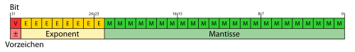
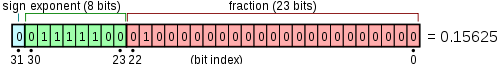

If you make a computer science degree, you will have to learn how numbers are internally represented. Most of the time, you get explanations like the pictures below:
{kind=link}

{kind=link}

You will (have to) learn how IEEE 754 floats are structured on a bit-wise level. But I also like to check if it is correct, what I've learned.
So this is how you can check it:
#include <stdint.h>
#include <stdio.h> // printf
#include <limits.h> // INT_MAX, UINT_MAX, ...
#include <math.h> // needed for NAN
union myUnion {
uint32_t i; // unsigned integer 32-bit type (on every machine)
float f; // a type you want to play with
};
void printValue(union myUnion u) {
printf("uint32_t\t:\t%u\n", u.i);
printf("Bits\t\t:\t");
for (int i = 31; i >= 0; i--) {
printf("%i", (u.i >> i) % 2);
if (i != 0 && i % 4 == 0) {
printf(".");
}
if (i == 31 || i == 23) {
printf("|");
}
}
printf("\nNumber\t\t:\t%0.10f\n\n", u.f);
}
void setSign(union myUnion *u, char sign) {
u->i = (u->i & (0xffffffff - (1 << 31))) + (sign << 31);
}
/**
* The exponent has 8 bits.
* When all bits are 0, you switch to denormalized numbers.
* When all bits are 1, you get either NaN or infinity, depending on
* your characteristic. If the characteristic is 0, you get infinity.
* Otherwise NaN.
*/
void setExponent(union myUnion *u, char exponent) {
u->i = (u->i & (0xffffffff - (0xff << 23))) + (exponent << 23);
}
/**
* The mantissa has 23 bits.
*/
void setMantissa(union myUnion *u, int mantissa) {
u->i = (u->i & (0xffffffff - (0xff << 0))) + (mantissa << 0);
}
int main() {
union myUnion testVar;
printf("Manual guessing\n");
testVar.i = 0;
setSign(&testVar, 1);
setExponent(&testVar, 0x01);
setMantissa(&testVar, 0x00);
printValue(testVar);
printf("What does UINT_MAX evaluate to?\n");
testVar.i = UINT_MAX;
printValue(testVar);
printf("What does nan evaluate to?\n");
testVar.f = NAN;
printValue(testVar);
printf("The example above and switched first bit on\n");
testVar.i = 0xbf200000;
printValue(testVar);
}
I think I have tried all interesting values. Have fun trying it yourself ☺
(hmm ... I could also try to make a visualization ... I will think about this when I have more time)
Python Solution
Prerequisites:
pip install bitstring
Python code convert.py:
# Third party modules
import bitstring
def float_to_bin(number: float) -> str:
bit_array = bitstring.BitArray(float=number, length=32)
return bit_array.bin
def bin_to_float(number: str) -> float:
bit_array = bitstring.BitArray(bin=number)
return bit_array.float
for number in [0, -0, +0, 12, 12.0]:
print(f"{number:4.0f}: {float_to_bin(number)}")
for bits in ["00000000000000000000000000000000"]:
print(f"{bits}: {bin_to_float(bits)}")
Zero Representation
Zero has two representations: 00000000000000000000000000000000 which is
positive 0 and 10000000000000000000000000000000 which is negative zero. They
are considered equal in all programming languages I know.
You can get the sign in Python like this:
def get_sign(number):
"""
>>> get_sign(-12)
-1.0
>>> get_sign(12)
1.0
>>> get_sign(-0.0)
-1.0
>>> get_sign(+0.0)
1.0
"""
return math.copysign(1.0, number)